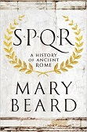
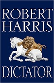
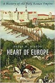
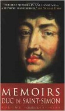
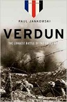
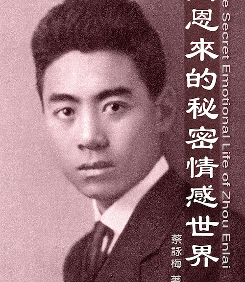
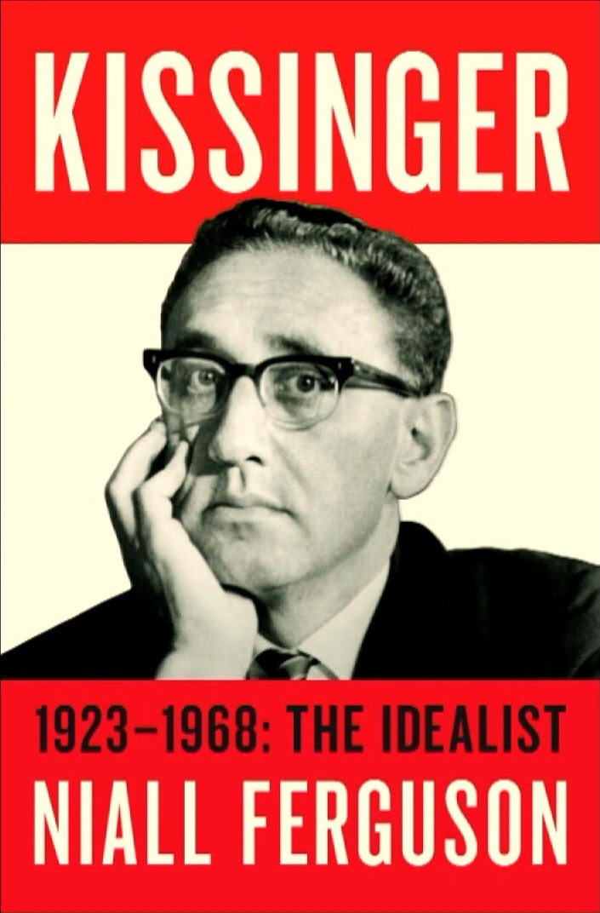

|
As I’ve mentioned before, spring isn’t the greatest season for new books, but we can always hope, can’t we?
But first, I should mention in passing the death of Umberto Eco, the Italian author best known for the international best-seller The Name of the Rose. (Yes, I did read it, although it took me several tries, and I still have a copy of it in my bookcase.) Eco was an Italian
novelist, essayist, literary critic, philosopher and semiotician (If you don’t know, don’t ask me). “Umberto Eco was one of the great novelists and
scholars of our time,” said Bruce Nichols, publisher of Houghton Mifflin…” I’m not sure I’d go that far, but he was a good read to go with a good Chianti
and Verdi playing in the background.

I don’t know if Umberto had the opportunity to read Mary Beard’s SPQR: A History of Ancient Rome (Book published by Liveright,
2015, 608 pp. $35, $23 Amazon.com.) before he passed but, if not, I think he would have enjoyed it.
Michael Fontaine asked and answered the question
What Rome Can Teach Us Today: Ancient Lessons for Modern Politics
.
(Foreign Affairs; March/April, 2016). Somehow I don’t think Kim, Xi, Chavez or Trump have read it. Pity, we’d all be better off if they had. But, it’s
never too late. There’s always something to be learned from the Romans. See if you can find it.

Staying with the Roman Empire for a bit, Dictator completes the Robert Harris trilogy about the great Cicero (Think Henry
Kissinger’s trilogy on Henry Kissinger or Robert Caro’s trilogy on Lyndon B. Johnson in comparison). Harris brings Cicero to life with wit, verve, and
vanity. This third volume, Dictator, is written as a novel and it tells a good story, but it also sheds a lot of light on one of history’s most
intriguing individuals; and proves that great histories of great men are still being written on paper.

Heart of Europe
is history at its most engaging and University of Hull history professor Peter Wilson has given the Holy Roman Empire its longest and most readable
one-volume history of the modern era. If you can’t afford the 12,500 GBP for a year’s tuition at the university to attend Wilson’s class, you can find a
copy of it on Amazon.com for less than under USD 25.00 (at this
writing) and for a few hundred dollars more you can find some of Wilson’s other works: Thirty Year’s War: Europe’s Tragedy, The Holy Roman Empire 1492 – 1806 (Studies in European History), From Reich to Revolution: German History 1558 – 1806 (European History
in Peerispective), A Companion to Eighteenth-Century Europe, and many more. Wilson has woven the early history of the Holy Roman Empire and
the story of its day as an appendance of the Hapsburgs into an intriguing story of then and now.
This next three-volume trilogy is actually a shorter version of the official nine-volume original memoir published over a thirteen-year span in
the 1700s by the Duc de Saint-Simon. Lucy Norton was the translator and editor of all three volumes Memoirs of Duc de Saint-Simon, 1691 – 1709: Presented to the King , Memoirs of Duc de Saint-Simon, 1710 – 1715: The Bastards Triumphant, and lastly Memoirs of Duc de Saint-Simon, 1715 – 1723: Fatal Weakness.

Wit, humor, vitriol and pageantry - the necessary hallmarks for a Peery at the French court also deliver a great read. Saint-Simon regales us with an
irreverent, insider’s view of his more than 30 years at court, from the later days of Louis XIV to the ascension of Louis XV. All the plays for power, sex,
position and money by friends, enemies, nobles and others are here, with Saint-Simon’s fascinating, and brutally honest, assessment of any situation.
I discovered Saint-Simon and his Memoirs while researching my article on François Cilliers and fell under his combination of Alexandre Dumas and
Anna Huffington style. I’m sure you will also, and the good thing is you can find a copy of volume one online for only 76 cents.

As the bicentennial of World War I reaches its peak so does the publication of books marking that occasion. Among the best so far is Paul Jankowski, a
professor of history at Brandeis University, who has given us Verdun: The Longest Battle of the Great War, World War I’s Iconic, Ironic Battle. Jankowski’s given us memorable
statistics: During battle 61 million shells fell in the area. And 300,000 men died. To which I can only add that in the current IS/ISIS/IRIS conflict the
U.S. has dropped approximately 2,000 precision-guided weapons at a cost of $1 million each. And 2,000 men, women, and children have died.

In spite of Beijing’s censors best attempts to prevent it, books about the inter-workings and private lives of the residents of the Zhongnanhai continue to
appear – often published by “below the counter” dealers in Hong Kong and written by authors who definitely are not on the Party’s “A List.” One example is
Tsoi Wing-Mui’s The Secret Emotional Life of Zhou Enlai. Tsoi’s book, just published, offers a radical reinterpretation of Zhou’s
life. He was probably gay, says Tsoi. A generation ago another author suggested the same thing with no credible evidence. The rumor died. Now, Tsoi
publishes essentially the same story, again with no evidence, credible or otherwise. You can read the reviews online for yourself and then, if you’re
interested, read the book – assuming you can find a copy. As for me, a fan of Zhou for some fifty years, I can only say that no self-respecting gay, no
matter how good a Maoist, would have sported the gull-wing eyebrows that Zhou wore almost as a badge of honor.
On a more positive (i.e. pro-Party line) note, former Chinese premier Li Peng has released a book, that chimes with his “Chinese Dream.” The book is a
compilation of Li’s speeches and reports on local economies in various provinces, cities and villages in China between 1983 and 2003. Li Peng was premier
of China from 1988 to 1998, during which he presided over the Tiananmen Square massacre, ordering a military crackdown on pro-democracy student protestors
in June 1989. He was also instrumental in the realization of the Three Gorges Dam project. I doubt if you’ll have any problem finding a copy of his book in
Chinese bookstores. My Hong Kong book buyer told me he still has 49 of the 50 copies he received months ago on his 50% discount shelf on the back wall of
his shop; although the publisher’s agent congratulated him for his “brisk” sales of the work after doing an inventory.
Interestingly, Li’s first memoir did not mention his Tiananmen experiences, but a book called Li Peng June 4 Diary, the authenticity of which has
not been officially recognized, was published in 2010 in the U.S. There is more on that story here.
What better way to wrap-up than to check-in with our favorite dip&DIP author, Henry A. Kissinger? According to TASS, HAK was in Moscow recently and met
with Russian leaders including 2nd and 4th President Putin and current Foreign Minister Sergey Lavrov. No word on whether Henry had another one of his $1
million speaking fee (K sozhaleniyu , rubley ne prinimayutsya) engagements while he was in Moscow.

One eagle-eyed blogger noted that, according to Internet sources, Niall Ferguson, the author of the recent controversial authorized HAK biography (Kissinger. Volume I. 1923 – 1968: The Idealist) was recently posting online from Davos (Switzerland) at the same time he was attending a conference
in Jaipur (India). No word what Ferguson’s fees were. This is the same fellow who is currently listed as a professor at both Harvard and Stanford. Nice
work if you can get it.
On the other side of the public The Nation recently (2/6/2016) published another damning criticism of the Kissinger/Ferguson/Harvard/Belfer/New
York Times story by Ferguson’s arch-rival Greg Grandin, who is peddling his own anti-Kissinger vitriol.
And just a few days ago The Boston Review published Machinations of Wicked Men, another damning review of Ferguson’s biography. Longer,
yes. Bloodier, definitely. More interesting, surely.
That’s it for this time. Happy reading!
If you wish to e-mail feedback on this article to the author, and clicking
on the envelope above does not work for you, feel free to use the "Dear
DP..." mail interface.
|